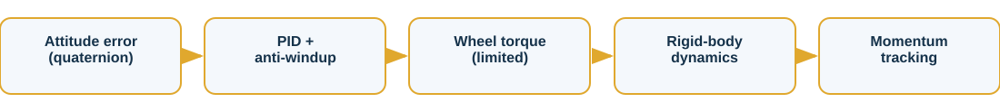

Reaction-Wheel Satellite ADCS
Quaternion-feedback slew with momentum management
Overview
A rigid spacecraft performs a 60 deg eigenaxis slew under a quaternion PID law with three reaction wheels, conditional-integration anti-windup, and torque and momentum limits.
The challenge
Spacecraft attitude lives on the quaternion manifold and the actuators (wheels) saturate and accumulate momentum. The controller must slew accurately without windup.
Approach

- Quaternion kinematics with full nonlinear rigid-body + wheel dynamics
- Quaternion-error PID feedback drives a 60 deg eigenaxis slew
- Conditional integration prevents wind-up during the large-angle transient
- A constant disturbance reveals secular wheel-momentum build-up
Results
| Slew | 60 deg eigenaxis |
| Settling (<1 deg) | 57.9 s |
| Final pointing error | 0.30 deg |
| Peak body rate | 2.77 deg/s |


What it demonstrates
Demonstrates quaternion attitude control, nonlinear rigid-body dynamics with wheel coupling, anti-windup, actuator saturation, and reaction-wheel momentum management.